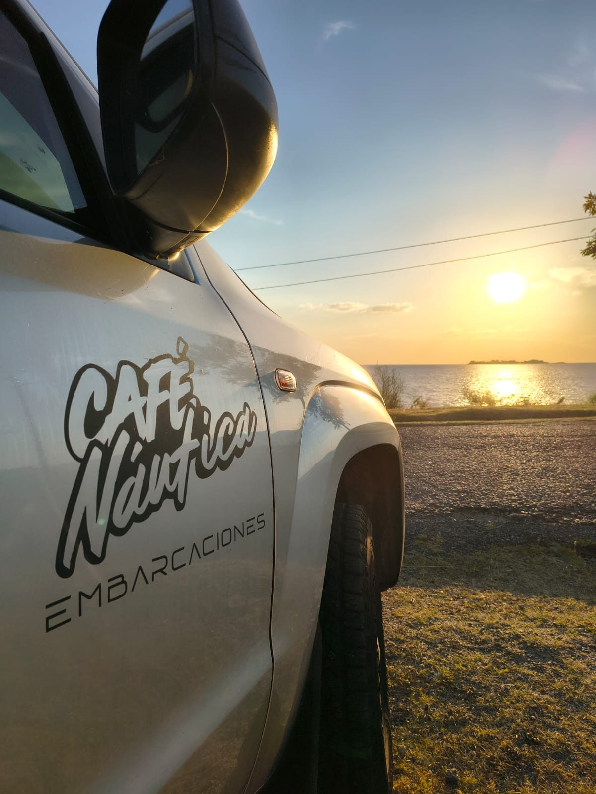
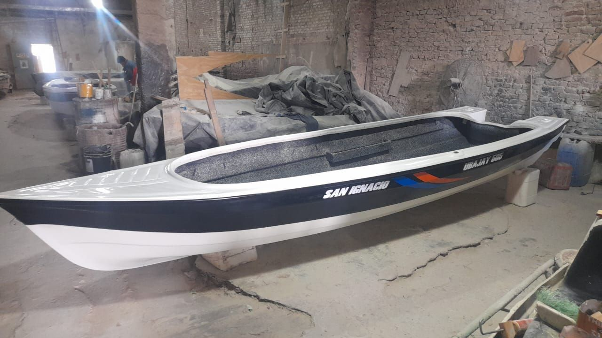
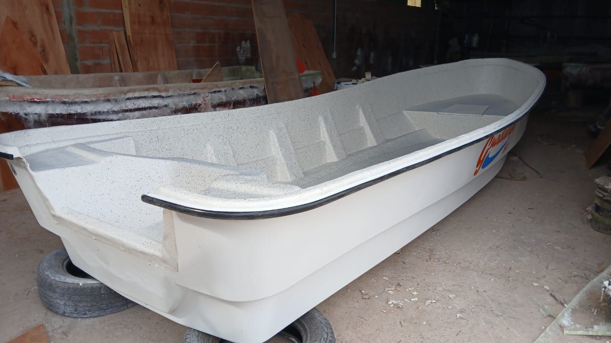
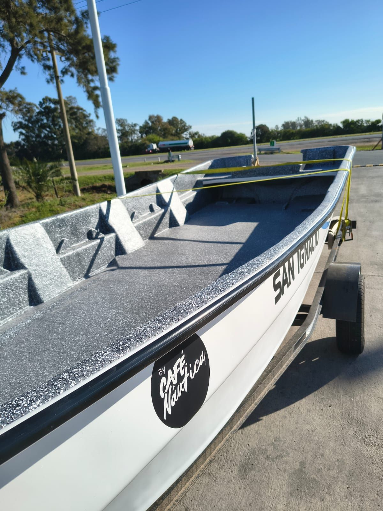
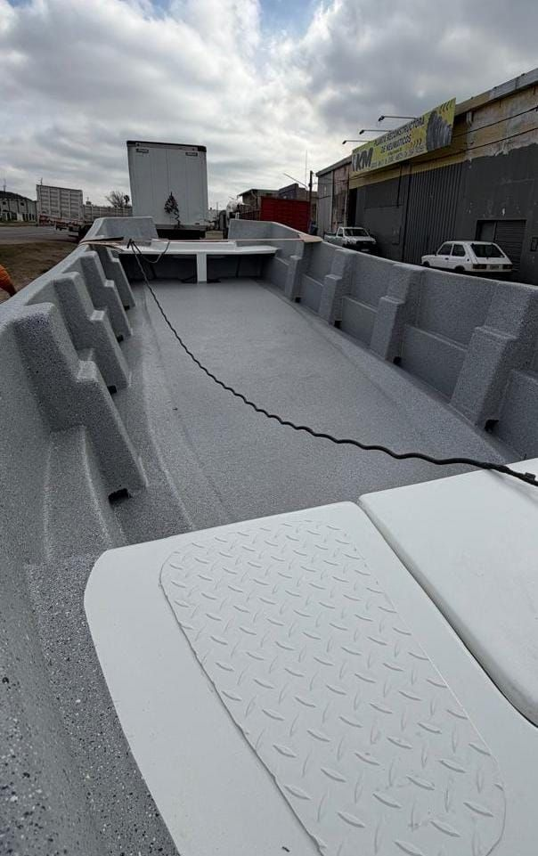
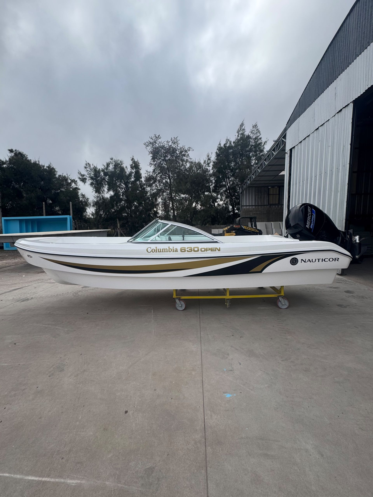
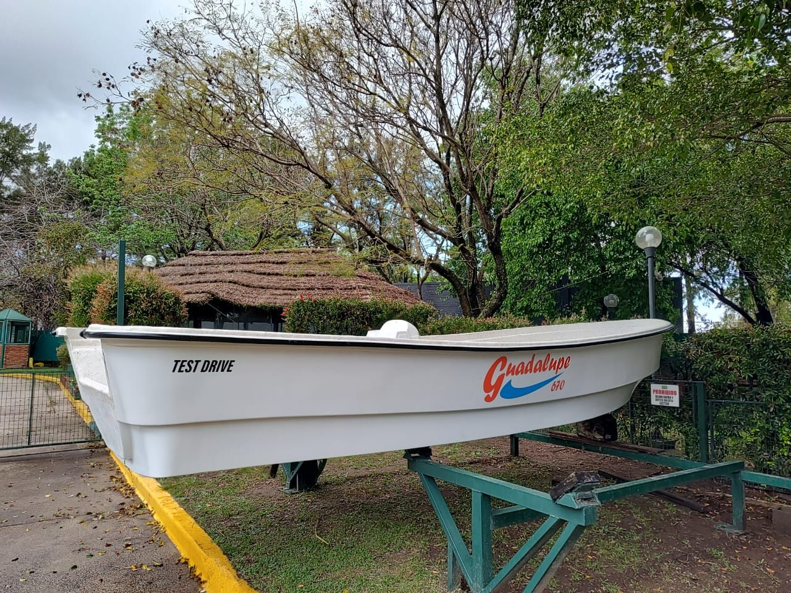
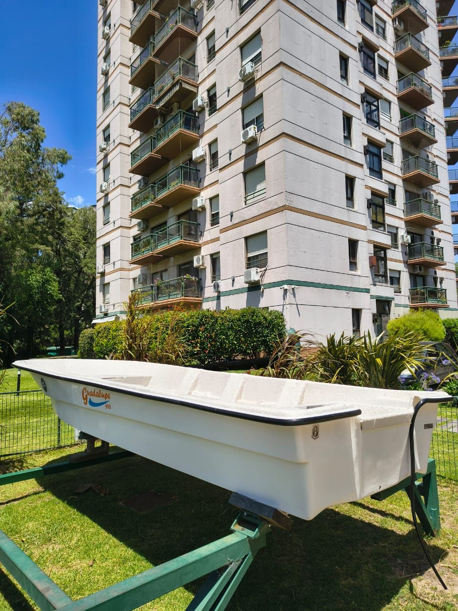
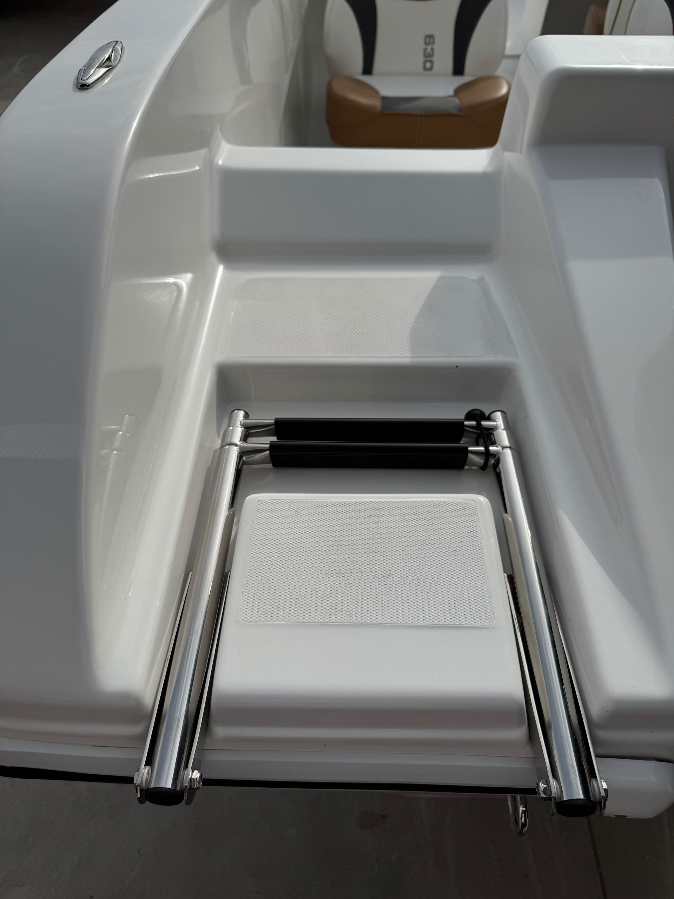

Selección y especificación
Definimos el modelo, el astillero y las especificaciones según lo que necesitás.

Tigre Centro · Buenos Aires
Lanchas Tracker nuevas y otras embarcaciones, con relación directa con los astilleros, precios competitivos y control de calidad propio antes de cada entrega.
Línea Tracker
Embarcaciones nuevas, pensadas para el Delta. Fabricación supervisada y control de calidad en cada unidad.
Elegí tu medida
De 4.70 a 6.70 metros. Seleccioná una medida para ver el modelo correspondiente.
Del astillero a tu Delta
Seguimos de cerca cada etapa del proceso de construcción en el astillero, antes de que la embarcación llegue a tus manos.
Definimos el modelo, el astillero y las especificaciones según lo que necesitás.
La embarcación se fabrica de forma nueva en el astillero correspondiente.
Seguimos el proceso de fabricación de cerca, con visitas y seguimiento directo.
Antes de la entrega, realizamos una inspección profesional de la unidad.
Coordinamos la entrega en Tigre, según la modalidad elegida.
Modalidades de compra
Reservá tu embarcación antes de que finalice su fabricación o disponibilidad.
Encargá tu unidad y coordinamos juntos una fecha de entrega planificada.
Unidades disponibles para entrega inmediata, según el stock vigente.
Por qué elegirnos
Todas las unidades que ofrecemos son nuevas de fábrica.
Seguimiento directo del proceso de fabricación en el astillero.
Relación directa con los astilleros, sin intermediarios innecesarios.
Preventa, entrega programada o entrega inmediata.
Te acompañamos en todo el proceso de compra.
Showroom ubicado en Tigre, a minutos del Delta.
Astilleros asociados
Trabajamos en relación directa con cada astillero, siguiendo de cerca la fabricación de tu embarcación.
Accesorios
Todo lo necesario para equipar o completar tu embarcación.
Galería








Showroom
Visitá nuestro showroom en Tigre Centro, a minutos del Delta, y conocé las embarcaciones disponibles.
Empecemos
Escribinos y te ayudamos a elegir el modelo, la medida y la modalidad de entrega ideal.